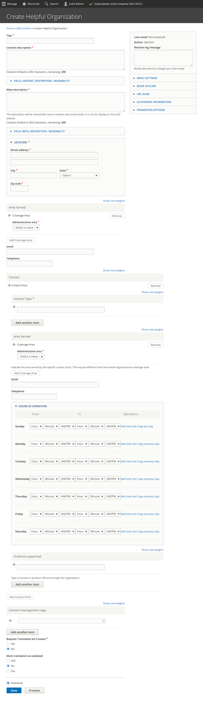

Structured Helpful Organization
Helpful organizations can be added to structured legal content within a solution.
Warning
Do not add an existing legal organization as a helpful organization. Within a solution, you can reference existing legal organizations directly.
What is a helpful organization?
These are organizations that do not qualify for inclusion within our organization/locations/services system but that may still be helpful to users This might include:
DV shelters and/or hotlines
Social services
Government offices
Todo
When to include a helpful organization in structured content should be defined as part of overall content governance.
Creating a helpful organization
To create a helpful organization:
Enter the name of the organization as the title
Add a short description and a meta description. The meta description will be used in the solution.
Enter the main location of the organization
Set the area served in the coverage area. You can add multiple administrative areas within one coverage area and/or add multiple coverage areas for different types of administrative areas
Optionally, set an organization email
Optionally, set an organization telephone
Add at least one contact point
Add any content management tags
Indicate whether a translation should be created
Indicate whether a translation is outdated
Contact point
A contact point is a specific set of data associated with a helpful organization that tells the user how to reach the organization. For legal organizations, this information lives in the services node.
To create a contact type:
Add a contact type. Schema.org provides examples of Customer complaints department, sales department. For our purposes it may be: intake, help desk, navigator.
Set the area served. This may be different than the organization service area. For example, A contact type of “Intake” may only serve 3 counties of the 14 county service area.
Email for the contact point, if users can contact via email
Telephone for the contact point, if users can contact via phone
Hours of operation
Products supported. Schema.org defines this as “The product or service this support contact point is related to (such as product support for a particular product line). This can be a specific product or product line (e.g. “iPhone”) or a general category of products or services (e.g. “smartphones”).” For our purposes, this is likely to be things like legal referrals, social service referrals, food services, financial support, housing support, utility assistance.
Todo
Determine if we should actually require the location or indicate that it should not be displayed/shared.
Todo
Determine if we should standardize a set of contact types and products supported for use in this content.
Full add/edit form
Automatic Helpful Organization Creation
Some external APIs allow us to automatically create and update helpful organizations within our website.
Housing counselors
We utilize housing counselor data from the Consumer financial protection bureau. This data is accessible via JSON files that are stored on that site and are available at:
https://files.consumerfinance.gov/a/assets/hud/jsons/” + zip + “.json”; where zip is the relevant zip code
https://files.consumerfinance.gov/a/assets/hud/jsons/60505.json for example.
Each json file contains:
2 objects: zip and counseling_agencies
zip object contains:
zipcode (the 5 digit zip code)
lat (the latitude of the zip code)
lng (the longetiude of the zip code)
counseling_agencies object contains an array of organizations. The mapping below shows how ILAO maps these agencies to our helpful organizations content types.
Unless otherwise noted, the JSON element is at counseling_agencies[i]
Helpful organization field |
JSON element |
|---|---|
Title |
.nme |
Content description |
Hardcoded text |
Meta description |
Hardcoded text |
Location - street address |
.mailingadr1 |
Location - city |
.mailingcity |
Location - state |
.mailingstatecd |
Location - postal code |
.mailingadrzipcd |
Area served - admin area |
Zip Codes |
Area served - zip code |
zip.zipcode |
Telephone |
.phone1 |
Contact - contact type |
“Housing counseling” |
Contact - area served |
|
–Admin area |
Zip Codes |
–Zip codes |
zip.zipcode |
Contact - email |
|
Contact - telephone |
.phone1 |
Contact - hours |
null |
Contact - products supported |
.services (this is an array; each item should be added separately) |
Languages |
.languages (this is an array; each item should be added separately) |
Source |
“ConsumerFinanceHousingCounselors” |
Navigational IA |
If proudcts supported includes “Rental housing counseling,” being evicted; if includes any term with mortgage delingquency then “foreclosure of a home I own” |
Website |
.website |
Hard-coded content and meta description: Housing counselors approved by HUD offer free or low cost independent advice on renting, foreclosures, and other housing and credit issues.